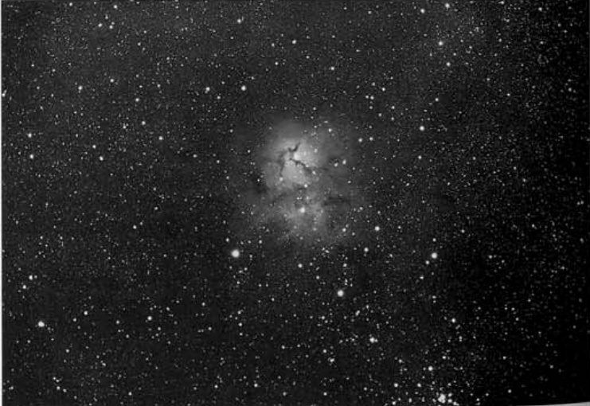

三裂星云 · Trifid Nebula (NGC 6514)

The Trifid Nebula, cataloged as Messier 20 and NGC 6514, represents one of the most visually striking deep-sky objects visible from Earth's northern hemisphere. Its name derives from the distinctive dark nebulae that appear to divide the glowing emission region into three distinct lobes, creating a celestial clover or three-part structure that has captivated astronomers and astrophotographers for centuries.
三裂星云，编号为 Messier 20 和 NGC 6514，是北半球可见的最具视觉冲击力的深空天体之一。其名称源于那些明显的暗星云，它们似乎将发光的发射区域分割成三个独特的瓣，形成了一种仿佛三叶草或三裂结构的外观，几个世纪以来一直吸引着天文学家和天文摄影师的目光。
"The name Trifid refers to the three-lobed appearance produced by dark nebulae." "三裂星云之名源于其三瓣状的外观，这种形态由暗星云所塑造。"
This remarkable nebula resides in the constellation Sagittarius, positioned at Right Ascension 18h 02m.5 and Declination -23° 02'. The object encompasses both an emission nebula and an embedded open star cluster, creating a complex stellar nursery where new stars are actively forming from the surrounding hydrogen gas.
这颗引人注目的星云位于人马座，赤经 18 时 02 分.5，赤纬 -23° 02′。这个天体包含了发射星云和嵌入其中的疏散星团，共同构成了一个复杂的恒星形成区，新恒星正在周围的氢气中不断孕育诞生。
Historical Discovery 历史发现
The discovery of the Trifid Nebula is credited to Guillaume Le Gentil, who likely observed this celestial wonder around 1747. Le Gentil was a French astronomer who made significant contributions to the study of nebulae during an era when these diffuse objects were only beginning to be systematically cataloged and understood.
三裂星云的发现归功于纪尧姆·勒让蒂尔，他大约在 1747 年观测到了这一天文奇观。勒让蒂尔是一位法国天文学家，在星云系统化编目和理解的起步年代，他对星云研究做出了重大贡献。
"Disc: Guillaume Le Gentil, probably 1747" "发现者：纪尧姆·勒让蒂尔，约1747年"
The nebula was later included in Charles Messier's famous catalog in 1764, earning its designation as Messier 20. This inclusion placed the Trifid among the select group of approximately 110 celestial objects that Messier considered potential comet confusions—objects that might deceive observers searching for new comets.
后来，梅西耶于 1764 年将其纳入著名星表，赋予其 Messier 20 的编号。这一收录使三裂星云跻身梅西耶星表约 110 个天体之列——这些都是梅西耶认为可能与新发现的彗星相混淆的天体。
Physical Characteristics 物理特征
The Trifid Nebula is located approximately 5,000 light-years from Earth, placing it within our own Milky Way galaxy's Orion Arm. The nebula spans approximately 20 arcminutes by 20 arcminutes in angular diameter, while the associated open cluster, cataloged as NGC 6514, measures about 28 arcminutes across.
三裂星云距离地球约 5,000 光年，位于银河系的猎户臂内。星云的角直径约为 20 角分 × 20 角分，而相关的疏散星团 NGC 6514 的视直径约为 28 角分。
| Parameter 参数 | Value 数值 |
|---|---|
| Type 类型 | Emission Nebula + Open Cluster 发射星云 + 疏散星团 |
| Constellation 所属星座 | Sagittarius 人马座 |
| Right Ascension 赤经 | 18h 02m.5 |
| Declination 赤纬 | -23° 02′ |
| Magnitude 星等 | 6.3 (cluster 星团) |
| Angular Size 角直径 | 20′ × 20′ (nebula 星云) / 28′ (cluster 星团) |
| Distance 距离 | 5,000 light-years 光年 |
| Discovery 发现者 | Guillaume Le Gentil, 1747 纪尧姆·勒让蒂尔，1747年 |
The nebula's vibrant appearance results from its composition and the stars embedded within it. The reddish-pink hues originate from hydrogen gas ionized by intense ultraviolet radiation emitted from hot, young stars at the nebula's core. These young stellar objects illuminate the surrounding material, creating the characteristic emission nebula appearance that makes the Trifid so visually spectacular.
星云鲜艳的外观源于其组成成分和嵌入其中的恒星。红色和粉红色的色调源自被核心区域炽热年轻恒星发出的强烈紫外辐射电离的氢气。这些年轻恒星照亮了周围的物质，形成了标志性的发射星云外观，使三裂星云呈现出如此壮观的视觉盛宴。
The dark lanes that give the Trifid its name are composed of dense concentrations of dust and cold molecular gas. These dark nebulae absorb and block the light from the glowing emission region behind them, creating the three-lobed structure that defines this object's appearance. These dust lanes are not merely visual features but serve as the raw material from which future generations of stars will eventually form.
赋予三裂星云其名的暗带由密集的尘埃和冷分子气体组成。这些暗星云吸收并遮挡其后方发光发射区域的光线，形成了定义这一天体外观的三瓣结构。这些尘埃带不仅仅是视觉特征，更是未来恒星形成的原材料。
The Color Contrast 色彩对比
One of the most remarkable features of the Trifid Nebula is the striking color contrast between its different regions. The emission nebula displays the characteristic red glow of hydrogen-alpha emission, while reflection nebulae within the same field show beautiful blue hues produced by starlight scattered off dust particles.
三裂星云最引人注目的特征之一是其不同区域之间鲜明的色彩对比。发射星云呈现出氢-α发射的典型红色辉光，而同一视野中的反射星云则显示出被尘埃粒子散射的星光产生的美丽蓝色调。
"Red-blue dual colors, dust dark lanes trifurcate the nebula, colors are extremely rich" "红蓝双色、尘埃暗带三裂，色彩极其丰富"
This combination of red emission and blue reflection nebulosity makes the Trifid a favorite target for astrophotographers seeking to capture the full range of nebular colors. The interaction between these different nebular components, combined with the dark dust lanes, creates a three-dimensional appearance that rewards careful observation with telescopes of various apertures.
这种红色发射与蓝色反射星云的组合使三裂星云成为追求捕捉星云全色范围的天文摄影师们的最爱目标。这些不同星云成分之间的相互作用，结合暗尘埃带，创造出一种三维外观，让使用各种口径望远镜的仔细观测者都能获得回报。
Observing Experience 观测体验
Through modest telescopes, the Trifid Nebula reveals itself as a soft, diffuse glow with hints of structure visible even under light-polluted skies. A 4-inch telescope begins to show the characteristic three-lobed shape, though the full glory of the nebula's colors requires larger apertures or long-exposure astrophotography.
通过小型望远镜，三裂星云呈现出柔和、弥散的辉光，在光污染的天空下也能看到结构的一些迹象。一台 4 英寸的望远镜开始显示出标志性的三瓣形状，尽管星云色彩的完整壮丽需要更大的口径或长曝光天文摄影才能呈现。
From a dark observing site, the Trifid rewards patient observers with stunning detail. The central dark lanes become increasingly apparent as aperture increases, and under exceptional conditions, the nebula can be glimpsed with binoculars as a faint fuzzy patch against the rich star fields of Sagittarius. The surrounding star cluster adds depth to the observation, providing scale and context to the nebula's ethereal glow.
在黑暗的观测地点，三裂星云为耐心的观测者带来令人惊叹的细节。随着口径的增加，中心的暗带变得越来越明显，在极好的条件下，甚至可以用双筒望远镜在人
🔒 受限于篇幅，本文仅展示部分样章。O'Meara 先生完整的观测手记、实测数据及未公开的独家配图，请参阅原著双语典藏版。
👉 立即在闲鱼获取《DEEP-SKY COMPANIONS》中英双语高清典藏版